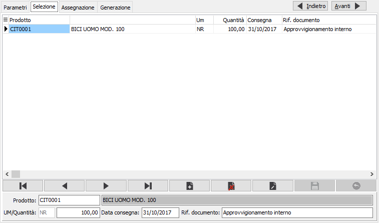
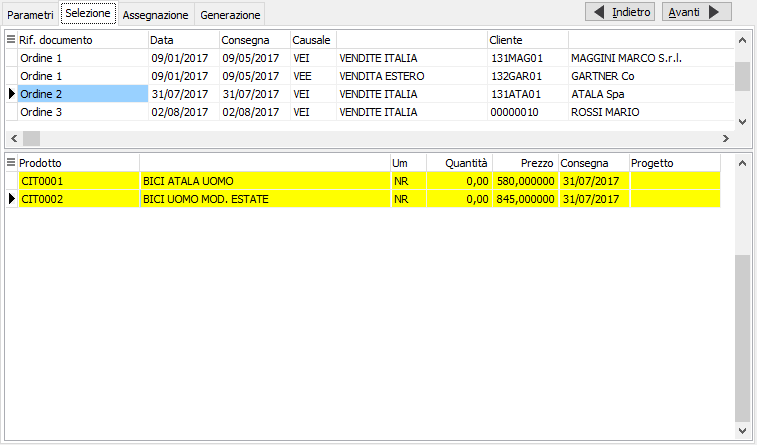
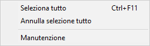
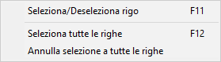

Selezione documenti
Nel caso di generazione manuale la finestra appare diversa rispetto a quanto compare in caso di generazione da documenti: è presente un pannello che consente l'inserimento di un codice prodotto, anche provvisorio, una quantità, una data prevista consegna ed un riferimento. La compilazione dei campi crea un documento "virtuale" al quale associare le richieste di offerta che saranno generate per i vari fornitori. La griglia visualizza i dati inseriti o già presenti in forma di elenco, saranno riportati anche i riferimenti eventualmente già presenti, ma che non hanno righe di richieste approvate; su questi riferimenti non sarà possibile effettuare variazioni.

Nel caso di generazione da ordini clienti o da richieste di acquisto, questa sezione appare divisa in due parti: la parte superiore contiene le teste dei documenti, ordini clienti o richieste di acquisto, risultato della selezione, alle quali fanno riferimento le righe nella parte inferiore. Saranno riportati anche i riferimenti a documenti eventualmente già presenti, ma che non hanno righe di richieste approvate.


Cliccando con il pulsante destro del mouse sulla griglia superiore si accede al menù mostrato a lato, da dove è possibile selezionare tutti i documenti elencati, annullare la selezione a tutti i documenti elencati e tramite il doppio clic selezionare o deselezionare il documento sul quale siamo posizionati; è anche possibile accedere direttamente alla manutenzione del documento sul quale siamo posizionati selezionando la voce Manutenzione.

Cliccando con il pulsante destro del mouse sulla griglia inferiore si accede al menù mostrato a lato, da dove è possibile selezionare e deselezionare il rigo sul quale siamo posizionati, funzione attiva anche tramite il doppio clic del mouse, selezionare tutte le righe del documento attivo oppure annullare la selezione di tutte le righe del documento attivo.Dopo aver effettuato le selezioni desiderate, è necessario selezionare almeno un rigo, tramite il bottone Avanti, oppure utilizzando il tasto funzione F10, si passa alla successiva fase di assegnazione.